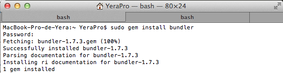

Tutorial Práctica 1:
Instalar RVM
-
Lo primero que hay que hacer es instalar RVM, con los siguientes comandos:
- \curl -sSL https://get.rvm.io | bash
-
Comprobamos que bundler está instalado:
- bundler bash: bundler: command not found
-
Al comprobar que no tenemos instalado bundler lo haremos con estos comandos:
- sudo gem install bundler

-
Ahora pasaremos a instalar las gemas sinatra y twitter:
- sudo gem install sinatra

- sudo gem install twitter

- Iremos a github:
- Crearemos un nuevo repositorio llamado: sytw1
Como ya tengo el repositorio instalado en mi ordenador solo tendre que subir los cambios ya que ya tendré dada de alta la contraseña etc
-
Una vez hecho todos los pasos que nos indica el git para crear nuestro repositorio, tendremos que usar gitpages, yo lo he hecho directamente:
- Voy ajustes del repositorio.
- Selecciono generar pagina automaticamente.
- Se me habrá creado ya una nueva rama.